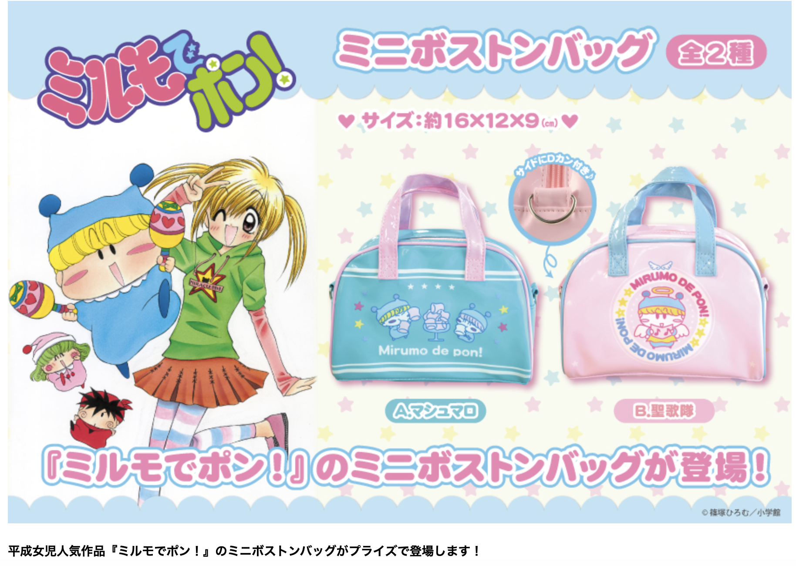
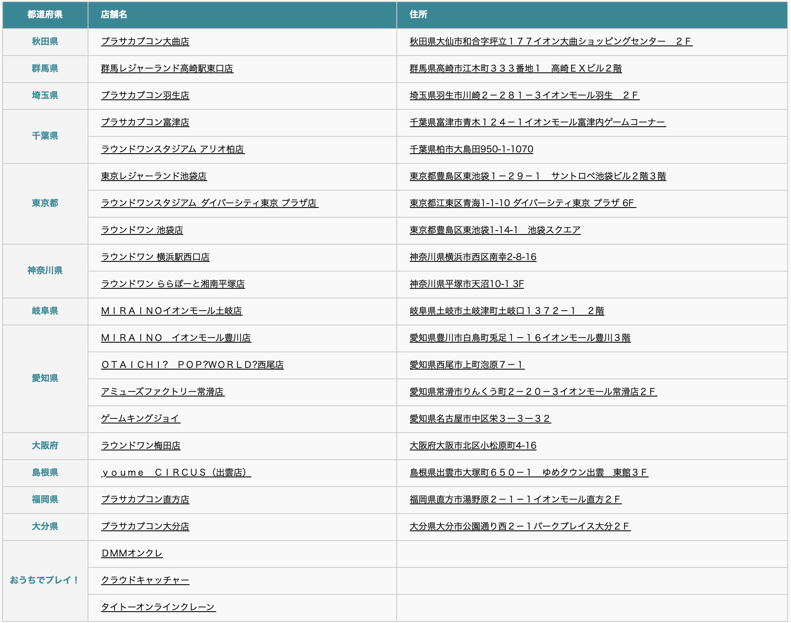
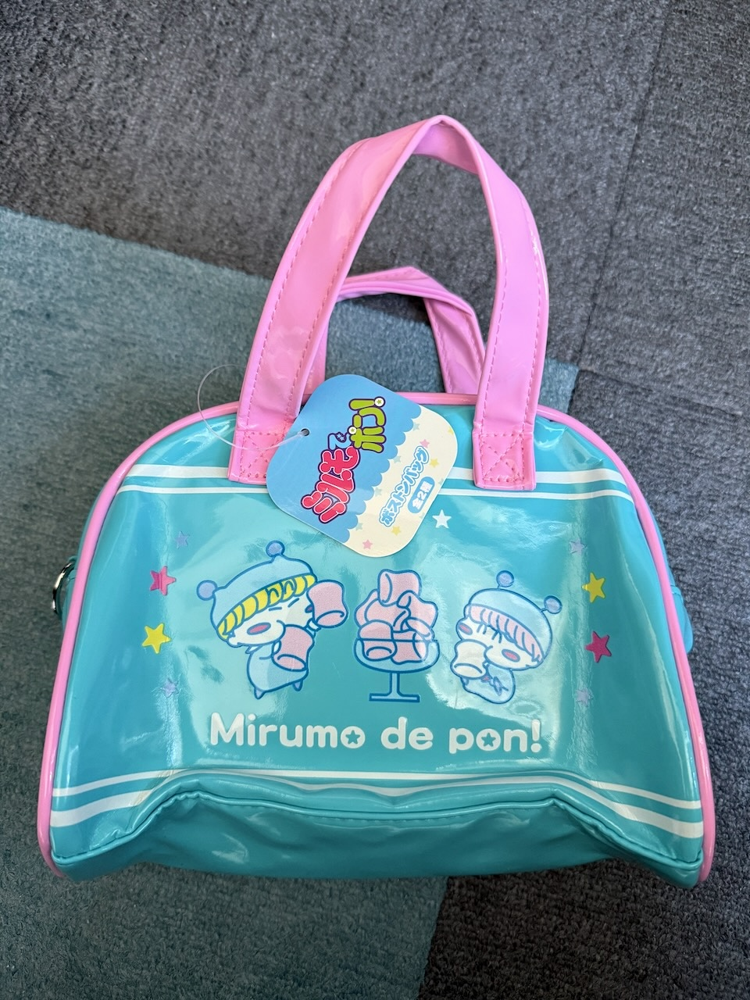
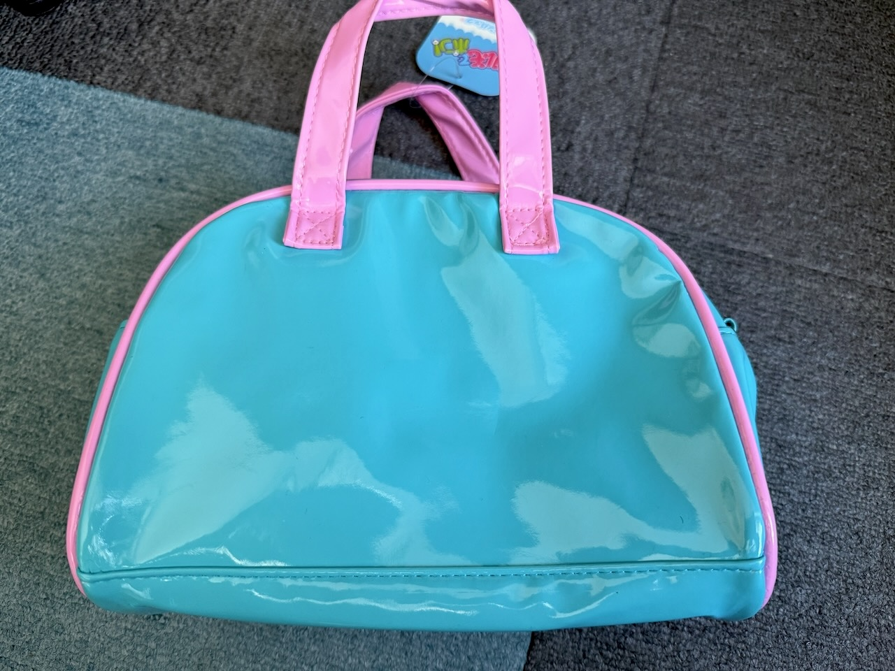
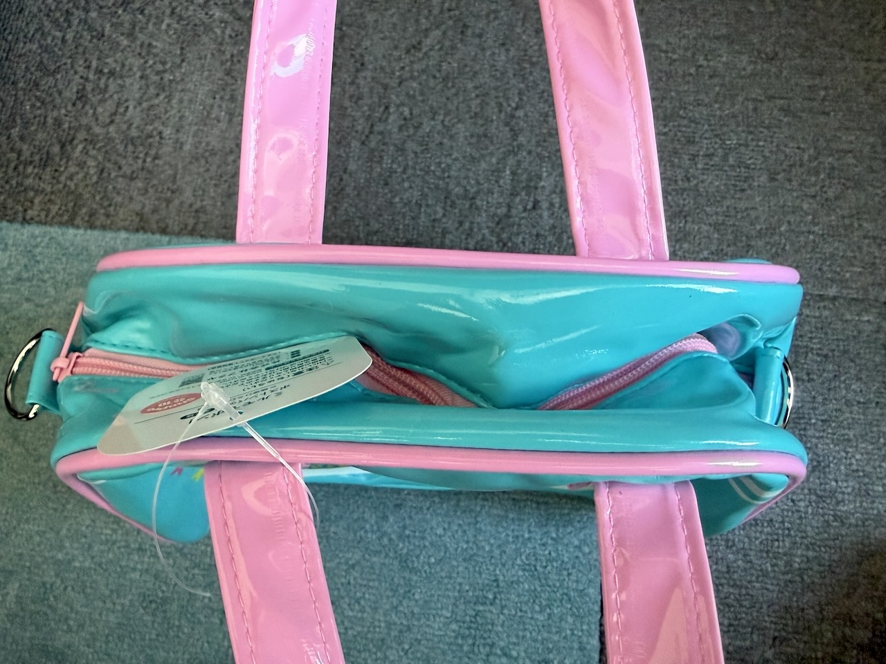
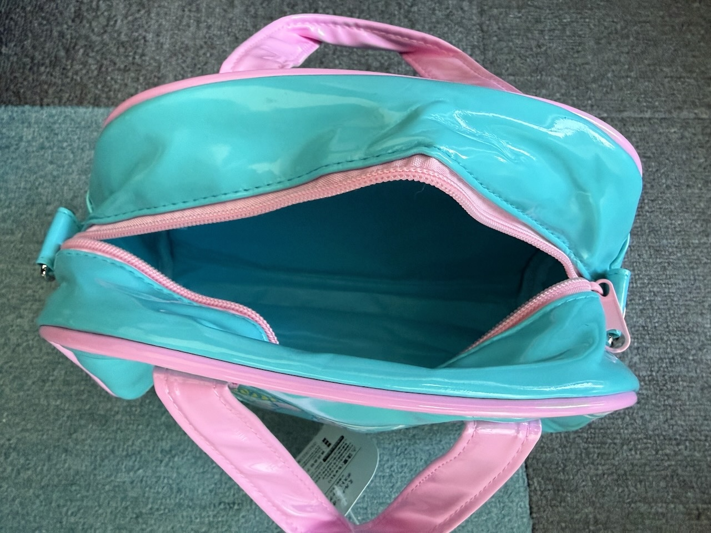
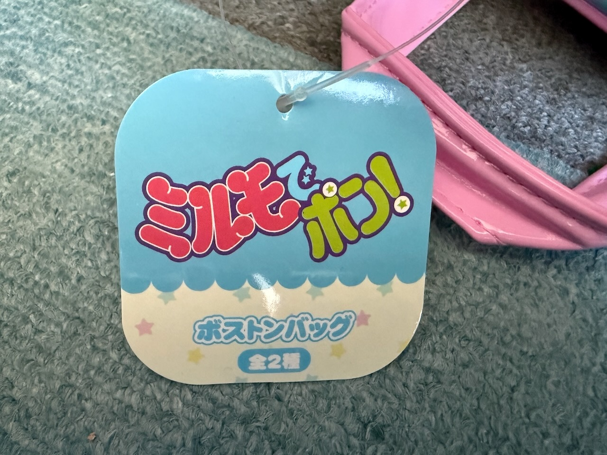
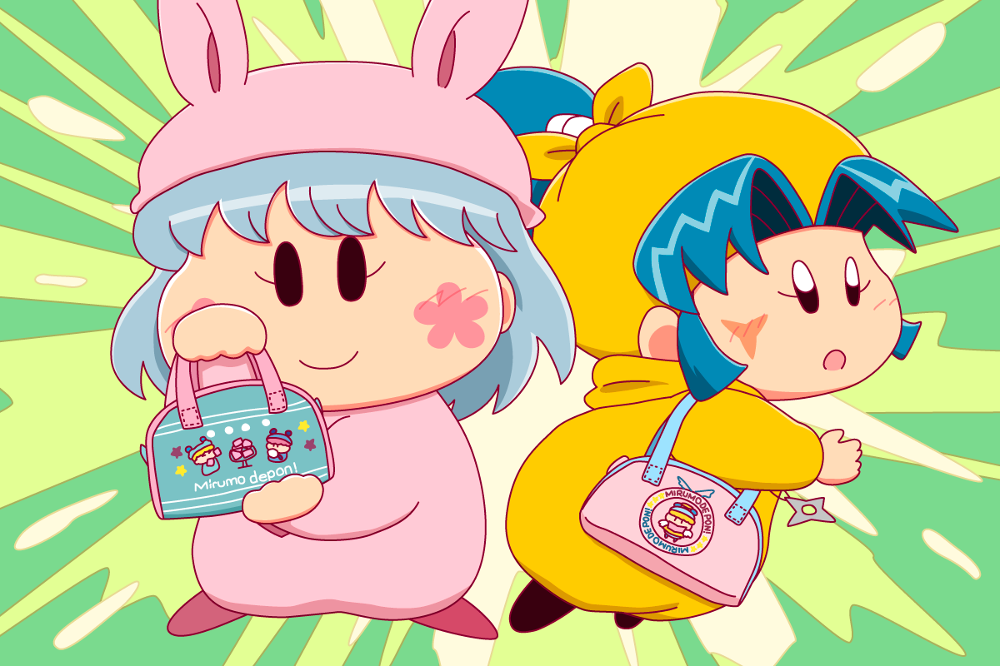

２０２５年１２月中旬に『ミルモでポン！ ミニボストンバッグ』が発売されました。
前回の聖歌隊のマスコットぬいぐるみと同じく、クレーンゲームなどのプライズ品としての販売になります。
販売元はミルモグッズでお馴染みのフクヤさんです。

商品の紹介画像は、記録も兼ねてフクヤさんの公式ホームページから引用させていただきました。
ミニボストンバッグは「A.マシュマロ」「B.聖歌隊」の２種類のラインナップ。
水色とピンク色というカラーリングがミルモとリルムを連想させてくれますよね。
以下は公式ホームページに記載されていた取扱店舗情報です。
皆さんはお店で見つけられましたでしょーか？

私の方は、メルカリで「A.マシュマロ」をゲットできましたので、以下に写真とともにレポートしたいと思います。

マシュマロを食べているミルモとムルモが全面に描かれています。
よく見ると、ムルモが食べているマシュマロだけなぜか白いですね（ムルモのマシュマロだけが本物で、他は全部偽物だったりして！？）
個人的には「Mirumo de pon!」のロゴががわいくて良い感じです。

ミニボストンバッグのサイズは、商品紹介画像では「約16×12×9(cm)」と記載されています。
コロちゃおと同じくらいの大きさと思えばわかりやすいのかな。

背面はシンプルです。

上からの写真です。
サイドにDカンがついているので、ショルダー紐やストラップをつけたりと色々なアレンジが可能になっています。
ファスナーがピンク色なのもかわいいですね。

マチが広いのでいろいろ入りそうです。
ぬいぐるみを入れて外に連れ出してみましょう！(^^)

商品についているタグです。
今回はグッズをゲットできない可能性があったので、記事用に記念イラストを描いていました（描き終わった後に無事にゲットできました^^;）

ということで、ちびっこ女の子妖精２人にミニボストンバッグを持たせてみました。
謎にドヤ顔のパピィと、いまいち使いこなせていないヤマネちゃんです(^◇^;)
私としては、ヤマネちゃんとピンク色との相性がなかなかいいなぁと思ったり。
(2026/1/24)